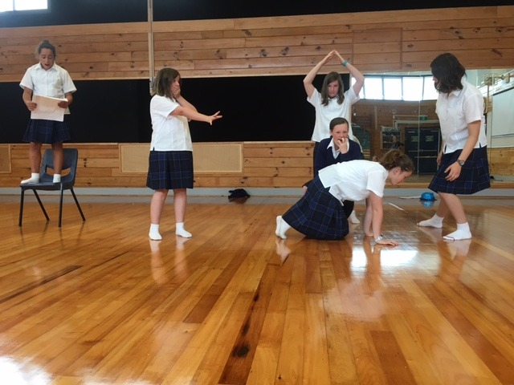
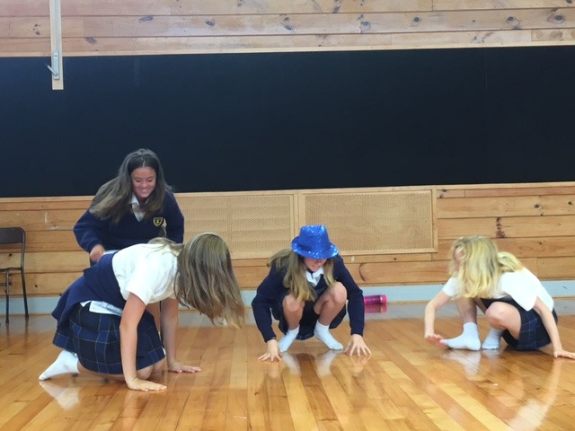
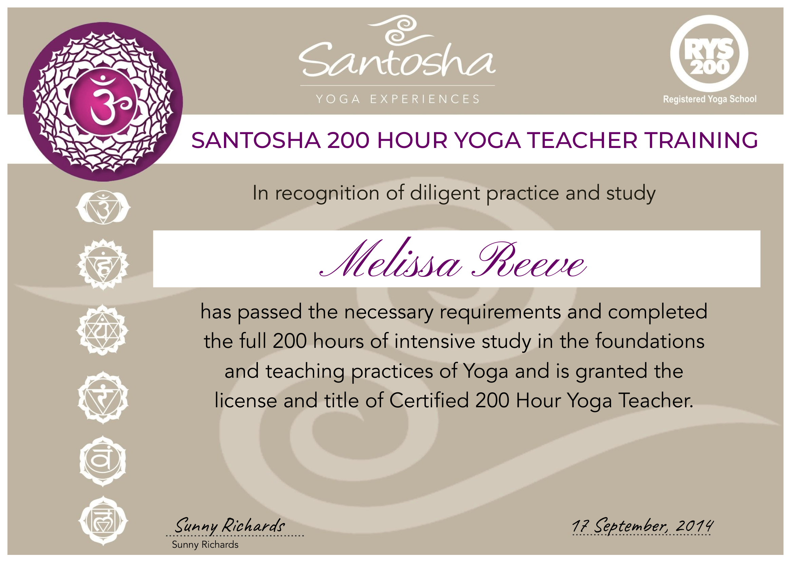
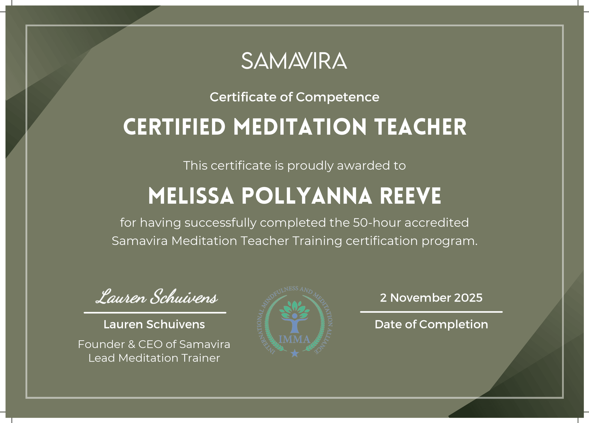

A journey from theatre and film to the sanctuary of the yoga mat. Drama Teacher, Meditation Teacher, and lifelong explorer of human connection.
After majoring in Theatre and Film at Victoria University of Wellington, Melissa Reeve graduated from Toi Whakaari (2010) with a Bachelor of Performing Arts Majoring in Acting. She went on to begin the audition circuit of Auckland and Sydney where she had a cameo in Shortland Street, played Karen Soich in Underbelly, and was cast as an Italian Model in a web series called Model Madness. Coaching in American Accent with Terri D’ath helped her score a role in Deadly Women (HBO) which screened in the USA.
Sydney had her feature in several advertisements for Rushcutters Bay Apartments, Vodafone, and Blackmores Vitamins. Leaving Sydney she ventured to Cangu, Bali to complete her International Yoga Teacher Training Alliance Certification in yoga. After returning to New Zealand she completed her Bachelor of Education to be able to teach her passions of Drama and English in Secondary School.

She has completed separate courses in Swedish, and Yoga massage (2015), and Balinese Massage (2023). In 2025 she became a Meditation Teacher through Samvira Meditation and is registered with the International Meditation and Mindfulness Association (IMMA). She is the proud Mother of her son, Gustaf, born in 2024.
View my portfolios here:




E: Melissa.reeve@gmail.com
T: 0221024728